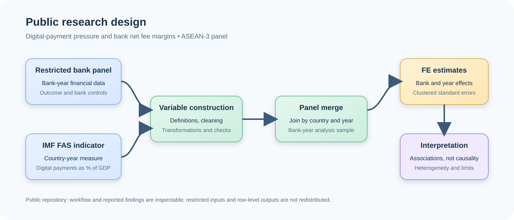

Research
Digital payment pressure and bank net fee margins
Evidence from an ASEAN-3 bank panel, 2014–2022
This page is the readable version of my undergraduate research. It states the question, how the panel was built, what the fixed-effects models show, and — at the same length — what the design cannot tell you.
- 344 bank-year observations
- 39 commercial banks
- ASEAN-3 Indonesia, Malaysia, Thailand
- 2014–2022 annual observations
Why the direction of the relationship is not obvious
Is digital payment pressure associated with bank net fee margins in Indonesia, Malaysia, and Thailand?
The study does not assume that digital payments help or hurt banks. Digitalisation can affect fee income through several channels at once, and they push in different directions:
Transaction and service expansion
Digital channels lower friction, increase usage, and can support new payment or merchant services.
Competitive pressure
FinTech firms, payment networks, and digital-first competitors may compress prices or reallocate payment-related revenue.
Customer relationships and cross-selling
Frequent digital engagement and transaction data can create opportunities in deposits, lending, insurance, or wealth management.
Institutional and market differences
Payment infrastructure, regulation, financial inclusion, and bank business models differ substantially across countries.
Because these channels can offset each other, a negative coefficient would not by itself show that digital payments reduce bank income. It could reflect market composition, country-specific institutions, or omitted factors that move together with both payment activity and bank outcomes.
Two data levels joined into one panel
Bank-year financial variables form the outcome and controls; a country-year indicator measures digital payment activity.
| Item | Value |
|---|---|
| Countries | Indonesia, Malaysia, Thailand |
| Banks | 39 |
| Bank-year observations | 344 |
| Period | 2014–2022 |
| Study design | ASEAN-5 was originally planned; the selected indicator was not consistently available for the Philippines and Singapore |
Bank-year variables
Net_Fee_Margin— net fee income relative to total assets.Size_USD— bank scale.Capital_Adequacy_Proxy— equity relative to total assets.Credit_Risk— asset-quality exposure.Interest_Expense_Ratio— funding cost.Deposit_Ratio— funding structure.
Country-year digital payment pressure
The explanatory variable comes from the IMF Financial Access Survey indicator IMF_FAS_FCMIBT, used with the unit PT_GDP: mobile and internet banking transactions as a percentage of GDP.
- The indicator source is public; generated extraction files are not committed to the repository.
- Availability, definitions, and reuse terms can change, so the workflow documents how the indicator was discovered and selected instead of treating it as a black box.
Fixed effects, clustered inference, and explicit cleaning rules
The workflow separates panel preparation, indicator extraction, merging, estimation, and robustness checks, so each decision can be inspected on its own.

Specification
- NFM is bank i's net fee margin in year t.
- DPP is the digital-payment-pressure measure for country c in year t.
- X is a vector of bank-level controls.
- α is a bank fixed effect and λ is a year fixed effect, which absorb persistent bank differences and common time shocks.
- The coefficient β is a conditional association inside the stated model, not an automatically causal effect.
How the models were run
- A complete-case sample is formed on the required outcome, explanatory variable, and controls so specifications are comparable.
- Continuous variables are winsorised at the 1st and 99th percentiles within the analysis sample.
- Standard errors are clustered at the bank level to account for dependence within bank histories.
- Country subsamples keep bank fixed effects and drop year effects, because a country-year explanatory variable would otherwise be absorbed in a single-country model.
From baseline to robustness
- Scaled digital-payment pressure (
DPP_10pct_GDP). - Scaled pressure with additional financial controls, then a full-controls specification.
- A logarithmic baseline (
Log_Digital_Payment_Pressure). - A bank-size interaction (
Digital_x_LargeBank). - A centred nonlinear specification with a squared log term.
- Country-subsample estimates of the log specification.
Limited linear evidence, a significant logarithmic association
All models use the same 344 bank-year observations, so the specifications are directly comparable.
| Specification | Coefficient | Observations | Interpretation |
|---|---|---|---|
| Main model, scaled measure | −0.00292* | 344 | Marginal Negative association with marginal statistical evidence. |
| Main model with controls | −0.00264 | 344 | Not significant Negative sign but no statistical evidence. |
| Full controls model | −0.00208 | 344 | Not significant Negative sign but no statistical evidence. |
| Log baseline model | −0.10171** | 344 | Significant Negative, statistically significant pooled association. |
| Nonlinear model | −0.10829** | 344 | Significant Negative linear term; the squared term is not significant. |
How to read this table
- The scaled and log models use different units, so the coefficient sizes are not comparable across rows; only the sign and significance are.
- The pooled log association is statistically significant, but country subsamples are heterogeneous, and decomposition suggests the pooled result may substantially reflect differences between countries rather than a shared within-country mechanism.
- Statistical significance is not the same as economic importance, and neither is the same as causality.
What this study cannot claim
The results are conditional associations, not causal estimates. Six constraints explain why.
- Interpretation: a coefficient describes an association under a model, not an identified causal effect.
- Data level: the explanatory measure varies at the country-year level while the outcome is bank-level, which limits available within-country variation.
- Coverage: three countries are included, so the study should not be generalised to ASEAN-5 or all banking markets.
- Omitted variables: regulation, payment infrastructure, macroeconomic conditions, and market concentration may affect both digital payments and fee margins.
- Income aggregation: net fee margin does not separate payments, cards, merchant services, wealth management, or other non-interest income.
- Data access: the underlying bank panel cannot be redistributed, so the thesis regressions are inspectable but not publicly rerunnable.
Method transparency without data redistribution
The repository separates what can be rerun from what can only be inspected.
| Component | Publicly reproducible? | Notes |
|---|---|---|
| Synthetic fixed-effects demonstration | Yes | Self-contained in examples/run_example.py, with a deterministic synthetic panel. |
| IMF FAS retrieval and indicator extraction | Partly | The source is public, but availability and terms can change; generated outputs are not committed. |
| Bank-panel construction and thesis regressions | No | Required WRDS-derived data and intermediate files are restricted and excluded. |
| Reported thesis findings | Inspectable only | The results are documented, but public files cannot regenerate them without the restricted inputs. |
Public demonstration in three commands
The example uses deterministic synthetic data. It demonstrates the Python and linearmodels workflow; it is not evidence for the thesis.
Where the research should go next
- Disaggregate non-interest income into payments, cards, merchant services, and wealth management.
- Broaden country coverage to restore the ASEAN-5 design.
- Move towards identification: payment infrastructure or licensing changes, difference-in-differences or event designs, lagged explanatory variables, and dynamic panel methods.
- Consider cross-sectional dependence in inference, for example Driscoll–Kraay standard errors.
Documentation behind this page
Everything below lives in the public repository. Restricted data, course submissions, and row-level outputs are deliberately excluded.
- Public research report Design, results, limitations, and data-access boundaries.
- Variable definitions Conceptual definitions without restricted observations.
- Methodology appendix Workflow, specification, cleaning, and inference choices.
- Main regression code Final specifications, retained for transparency.
- IMF Financial Access Survey Source of the country-year digital payment indicator.
The repository keeps bank identifiers, raw and derived datasets, submission drafts, feedback, and signatures out of the public surface. Check current WRDS, IMF, and university terms before redistributing any data or supporting material.